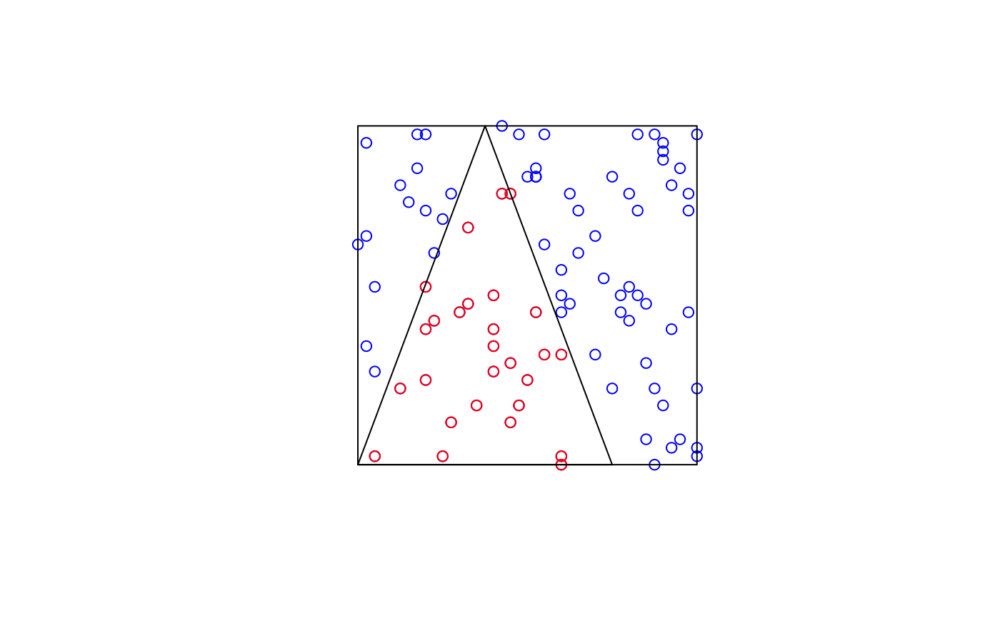

crop subsets SpatialData elements according
to a rectangular bounding box or arbitrary polygonal shapes.
For SpatialData objects, crop propagates the operation
across all layers that share the coordinate space j.
For SpatialDataFrames (points and shapes), cropping relies on
sf::st_intersects (i.e., instances that intersect the
query region in any way are kept). For circle shapes, radii
are currently ignored (i.e., a circle is kept if its centroid
intersects the query region).
For SpatialDataArrays (images and labels), only bounding box
cropping is supported. The requested spatial bounding box is
projected into pixel coordinates, and the underlying array is
sliced accordingly. The wh metadata is updated to
reflect the new spatial extent.
Usage
# S4 method for class 'SpatialDataArray'
crop(x, y, j = 1, ...)
# S4 method for class 'SpatialDataFrame'
crop(x, y, j = 1, ...)
# S4 method for class 'SpatialData'
crop(x, y, j = 1, ...)Arguments
- x
SpatialDataobject or element.- y
query specification; bounding box: length-4 numeric list with names 'xmin/xmax/ymin/ymax', or an
st_bbox; polygon: numeric matrix with 2 columns (= xy-coordinates), or anst_polygon(sfg) orsfc/sfobject.- j
character string specifying a coordinate system.
- ...
optional arguments passed to and from other methods.
Examples
zs <- file.path("extdata", "blobs.zarr")
zs <- system.file(zs, package="spatialdataR")
sd <- readSpatialData(zs, tables=FALSE)
# bounding box crop of a SpatialData object
y <- list(xmin=10, xmax=50, ymin=10, ymax=50)
crop(sd, y, j="global")
#> class: SpatialData
#> - images(2):
#> - blobs_image (3,40,40)
#> - blobs_multiscale_image (3,40,40)
#> - labels(2):
#> - blobs_labels (40,40)
#> - blobs_multiscale_labels (40,40)
#> - points(1):
#> - blobs_points (92)
#> - shapes(3):
#> - blobs_circles (5,circle)
#> - blobs_multipolygons (2,polygon)
#> - blobs_polygons (5,polygon)
#> - tables(0):
#> coordinate systems(5):
#> - global(8): blobs_image blobs_multiscale_image ... blobs_polygons
#> blobs_points
#> - scale(1): blobs_labels
#> - translation(1): blobs_labels
#> - affine(1): blobs_labels
#> - sequence(1): blobs_labels
# cropping individual elements
a <- sf::st_bbox(c(xmin=10, xmax=50, ymin=10, ymax=50))
b <- matrix(c(10,10, 25,50, 40,10, 10,10), ncol=2, byrow=TRUE)
p <- crop(point(sd), a)
q <- crop(point(sd), b)
plot(p$geometry, col="blue")
plot(q$geometry, col="red", add=TRUE)
plot(sf::st_as_sfc(a), add=TRUE)
lines(b, type="l")
